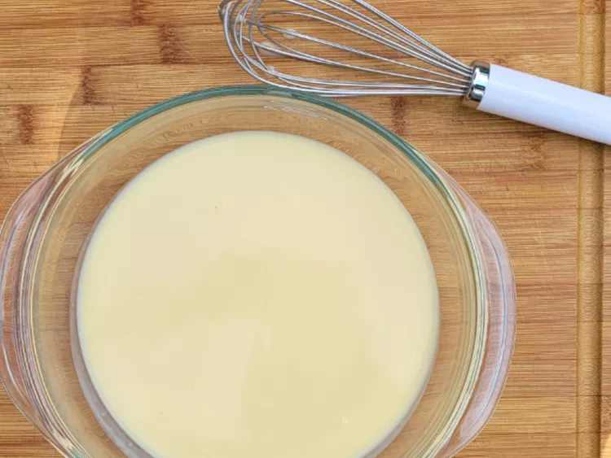

Creme Patissiere

Descripton
Creme patissiere, sometimes shortened to creme pat, is a rich and creamy
vanilla custard filling that’s got the perfect consistency for filling
eclairs, cream puffs, and fruit tarts.
Ingredients
- 2 cups milk
- 2 tablespoons cornstarch
- 1/3 cup white sugar
- 1 large egg
- 2 egg yolks
- 1/4 cup unsalted butter, cubed
- 1 teaspoon vanilla extract
Steps
-
Whisk 1/3 of the cold milk and cornstarch together in a medium bowl
until smooth.
-
Pour remaining milk and sugar into a small saucepan. Heat over medium
heat, stirring occasionally, until milk begins to simmer; remove from
heat and set aside.
-
Stir egg and egg yolks into cornstarch mixture; gradually whisk in hot
milk. Pour mixture back into the small saucepan; cook over medium-low
heat, whisking constantly, until thickened and mixture coats the back of
a spoon, about 3 to 5 minutes.
-
Remove custard from heat; whisk in butter and vanilla until smooth.
-
Transfer into a bowl and cover directly with plastic wrap to prevent a
skin forming; allow to cool before using.